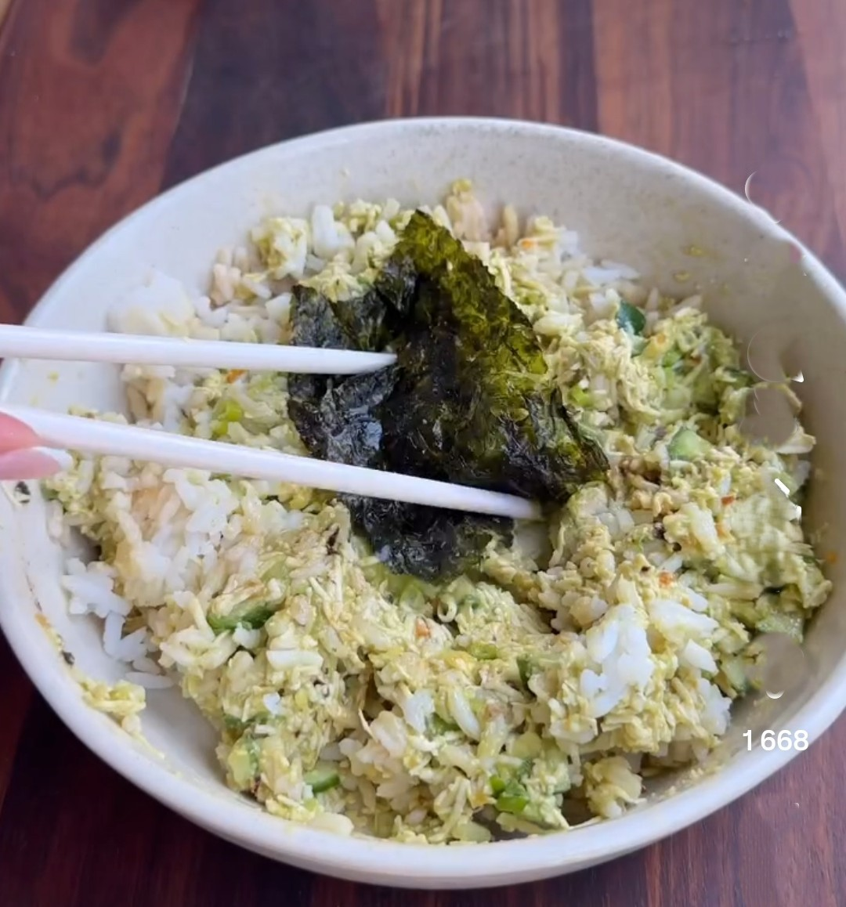
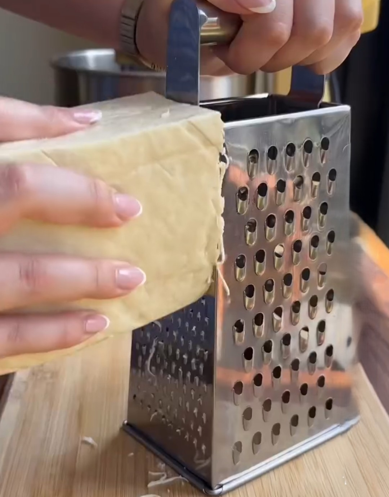

Enkelt recept på Avocado Bowl
En snabb och smarrig bowl att slänga ihop på mindre än tjugo minuter!
Ingredienser
för 2 portioner
- 1 avocado
- 200 g riven tofu
- 1/2 gurka
- 2 salladslökar
- 1 msk soya
- 1 msk crispy chili olja
- 0,5 dl Hellmans Majonnäs
- Salt och peppar
- 2 dl ris
- Sjögräschips med wasabismak
Så här gör du :
- Koka riset med 4 dl vatten
- Medans riset kokar pressa tofun lätt med en köks handduk för att få ut extra vätska.
- Riv tofun till strimlor med ett rivjärn
- Hacka gurka, salladslök och avokado och lägg i en stor skål
- tillsätt tofun, soya, majonnäs, chili olja i skålen och bland runt
- Servera röran med ris och sjögräschips
- Njut!
Serveringsförslag

